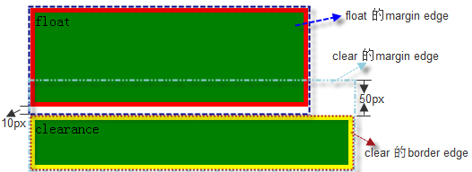

浮动框就是一个框在当前行被向左或向右挪动(偏移)，它不在常规流中。浮动框由浮动元素的框组成，它是一个块级框，而不论它本身是何种元素。 浮动框的宽度会尽可能的窄（根据内容来计算其宽度，如果没有内容也没有设置该浮动层的宽度，则该浮动层在页面中是看不见的）。 另外，假如在一行之上只有极少的空间可供浮动元素渲染时，那么这个元素会跳至下一行，这个过程会持续到某一行拥有足够的空间为止。
浮动框( 'float', 'floated' or 'floating' box )最有趣的特性是内容(Line Box)可以沿着它的边缘渲染 （设置 'clear' 属性可以禁止此特性 ）。 内容排列在沿着左浮动框的右边排列，而沿着右浮动框的左边排列，也就是我们常说的文字环绕效果。看下面的例子：
The IMG box is floated to the left. The content that follows is formatted to the right of the float, starting on the same line as the float.
上面的例子显示的效果是文字围绕着绿块的外边界（margin）排列
一个浮动框，会被向左或向右偏移，直到它的外边界接触到它包含块的内边界（padding）或另一个浮动元素的外边界， 如果存在一个行框，浮动框的顶边会和当前行框的顶部对齐。 如果水平方向没有足够的空间放置浮动元素，它将向下移动，直到有足够的空间或没有更多的浮动元素为止。看下面的例子：
This is a inline box
由于浮动框并不在常规流中，在该浮动框之前或之后创建的非定位框垂直排列，就好象浮动框并不存在一样（类似于绝对定位，但与绝对定位处理后续元素的规则又不太一样）。 然而，浮动框之后创建的行框会被缩短，为浮动框提供空间。如果被缩短的行框无法再容纳更多的内容， 它将向下移动，直到有足够的空间或没有更多的浮动元素为止。 当前行里浮动框前的任何内容，都将被重新排列到该浮动另一侧的第一个可用行里。 也就是说，如果在遇到左浮动框之前，行内框被放置到行上，剩余的行框空间足够容纳该左浮动框， 那么，左浮动框就会被放置在该行上， 并与该行框的顶端对齐，然后，已经在行上的行内框被相应地移动到该浮动框的右侧（右侧成了该左浮动框的另一侧），反之亦然，对于 rtl 和右浮动框也是一样。
如上文字环绕浮动元素的例子，包含文字的行框被缩短，是包含块减去浮动元素的外边距 margin 的宽度。其中，"The content" 两字，分别被放到了两行， 因为，一行中的剩余空间无法再容纳 "content"。
TABLE 元素、块级替换元素或者在常规流中创建了块格式化上下文的元素，它们的 border box在同一个块格式化上下文中， 如果有足够的空间， 这些块元素会紧临浮动元素放置，如果没有最够的空间，这些块元素会放置到浮动元素的下面，但是一定不会覆盖浮动元素的。看下面的例子：
这时，B 的宽度为 50px，它和浮动元素 A 的包含块都是 C，宽度为 200px。浮动元素在放置后，还有足够的空间放置 B，所以，B 被紧挨着 A 的 margin 框被放置。增大 B 的宽度至 150px 后：
浮动有以下值
| 值 | left | right | none | inherit |
| 初始值 | none |
| 适用于 | 所有元素 |
| 可否继承 | 否 |
| 百分比 | N/A |
可设置给任意元素，但只适用于生成非绝对定位框的元素（请记住绝对定位元素优先级最高），看以下例子：
从以上例子效果看，对于绝对定位的元素，浮动没有任何效果，按照标准，float此时的值为"none"，这也体现了浮动和绝对定位之间的一种平衡。 而相对定位和浮动同时出现时，两种效果都会产生，上例中向右移动，并在此基础上偏移left 5px top 5px。
注意： 绝对定位left和top的计算是从包含块的border边界开始的，如果没有显式设置left和top，则left和top默认值 为包含块的padding大小，而相对定位是按padding边界计算的，如果没有显式设置left和top，则left和top默认值为0。 调用jQuery方法position计算出来的值都是从border边界开始的。jQuery内部进行了统一处理。
根元素无所谓是否浮动，没有实际意义，因此对于根元素的浮动，浏览器应该当作 "none"。
浮动框定位的宗旨是，在其左、上、右外边界不溢出包含块边界的情况下，尽量的靠上、靠左（"float:left"）或靠右（"float:right"）放置，但是不能高于它前面生成的块框、浮动框和行框的顶边，并且不能与其他浮动元素重叠。
以下是浮动的定位规则，其中说到的其他元素，都和浮动元素处于相同的块格式化上下文中。
左浮动框的左外边界(margin edge)不可以出现在它包含块左边界之左。对于右浮动的元素也有类似规则。 左浮动元素的左外边界不能溢出包含块的左边界。右浮动元素不能溢出包含块的右边界。注意，边界是margin edge。看下面的例子：
如果当前框是左浮动框，并且在源文档中存在更早生成的左浮动框，那么对于任意这些先前的框，要么当前框的左外边出现在先前框的右外边之右，要么它的顶部必须在先前框的底部之下。对于向右浮动的框也有类似的规则。
也就是说，当前浮动框的定位会受到先前生成的同向浮动框的影响，它们不能相互遮盖。当前浮动框需要紧挨着先前同向浮动框的外边界进行定位，如果当前行空间不足，则折行，放置到它之前浮动框的下面。看下面例子：
上面left2会贴着left1的右侧margin边排列，而left4由于当前行剩余的空间不能容纳，所以left4会放置到下一行，这里由于产生了浮动，上下margin不会合并
左浮动框的右外边不可以出现在它右侧的任何右浮动框的左外边之右。对于向右浮动的元素也有类似的规则。 也就是说，同一行中不同向的浮动框不能够有互相折叠的现象。看以下例子：
以上两个浮动元素的包含块宽度为200px，无法在一行放置，所以，右浮动元素只好折行显示了。 如果把宽度设置成300px，则可以放到一行。
浮动框的顶外边不能高于它包含块的顶部。另外，当一个浮动框发生在两个外边距margin折叠的中间时，浮动元素的定位好像它有另一个空的块级父框位于常规流中。 也就是说，当浮动框处于两个发生外边距margin折叠的地方时，会被当作包含在一个空的块框中，它上面和下面的外边距会穿过它发生外边距折叠，当它不存在。看下面的例子：
以上例子中，3 个 DIV 元素的包含块是初始包含块。浮动框 O 处于 A 和 B 的中间，不应当妨碍 A 和 B 的外边距折叠。但ie6和ie7会有兼容性问题
还是例子更直观，更好理解，那就看以下例子吧
O、A、B 都是浮动元素，O、A 是左浮动元素，根据宽度计算，A 应该处于 O 的下一行。B 是右浮动元素。按照标准，B 浮动的时候，其顶边不应高于 A 的顶边，因此，B 不会放到 O 的右侧显示。 改变代码中 A 和 B 的位置，即可实现让 B 显示在 O 的右侧
浮动框的顶边不可以高于源文档中先前元素产生的任何包含一个框的行框的顶，跟上面不能高于块框或浮动框一样。看下面例子：
按照规则，right 浮动框的顶边不能高于含有行内框的行框的顶边。 但IE6和IE7不是按这个规则布局的。
左浮动框左边如果有另外一个左浮动框，它的右外边不可以出现在它包含块的右边之右。（或者比较宽松的要求是：一个左浮动不可以超出右边， 除非它已经尽可能地靠左排列。） 对于向右浮动的元素也有类似的规则。此条规则也是限定浮动元素的位置范围， 不可超出包含块。与第 1，2 条有关。
在符合所有规则的情况下，尽可能的向上放
和第 8 条一起，可以算是浮动的大规则，说明浮动框要尽量的向上向左或向上向右放。
总结：浮动的规则让人很迷惑。但从上面几条规则中也不难发现，浮动的宗旨是，在不溢出包含块的情况下，尽量的靠上靠左/右放置，但是不能高于它前面生成的块框、浮动框和行框的顶。
我们再来看一下浮动元素和常规元素位置变换后所呈现的不同，通过这两个例子可以更好的理解float
首先看块框
1、正常流在上面
2、正常流在下面
上面第一个示例中验证了以下规则：浮动框的顶边不可以高于源文档中先前元素产生的块框或浮动框的顶。 第二个示例中验证了以下规则：浮动框是脱离文档流的，并且浮动框要放置得尽可能的高。
当正常流在下面时，一个常用的应用就是左右布局，可以先书写右侧要显示的div，后书写的div就会放在左侧显示了（浮动脱离了文档流，后写的会认为前面的浮动元素不存在）
我们再看行框
1、正常流在上面
2、正常流在下面
上面显示的效果是不太一样的，但当我们把包含块的宽度500px去掉后，显示的效果是一样的，这也说明浮动层会尽量向上的原则。
可能大家都知道clear是用来处理浮动排列的，可究其原理，估计不是很明白。 处于浮动元素后面的元素是如何布局的？对于块框，会认为前面的浮动元素不存在（按常规流布局，当然前提是要有足够的空间容纳后续元素）；行框会绕着它排列。 有没有方法使块框也可以在它后面排列？答案是肯定的。clear 特性就是做这件事的，该特性是对浮动框和常规流中框的一种位置关系上的平衡。 关于这方面的处理，下面结合例子给出详细的解释。
首先看一下clear特性值
| 值： | none | left | right | both | inherit |
| 初始值： | none |
| 适用于 | 块级元素 |
| 可否继承 | 否 |
| 计算值 | 同设定值 |
该特性表明一个元素框的哪一边不可以和先前的浮动框相邻。'clear' 特性不考虑它自身包含的浮动子元素和不处于同一个块格式化上下文中的浮动元素。
对于插入框，该属性适用于插入框所属的最后的块框。
上面的解释理解起来可能比较费劲，我们还是先看个例子吧，右侧是没有设置clear的效果
float:right;clear:right
|
float:right;
clear:right
|
float:right;
没有设置clear:right
|
上面设置clear:right的例子中，div的上外边界( top margin edge )必须低于前面的浮动框。从这个例子可以看出clear:left是用来处理前面left浮动元素的， 而clear:right是用来处理前面right浮动元素的，上例子如果把clear设置为left，则不起作用。看下面效果：
我们再看一下浮动元素后面是行框的情况，看下面的例子，右侧是没有设置clear的效果
|
float:right;
clear: right clear: right clear: right clear: right
clear:right clear:right clear: right clear: right
clear: right clear: right clear: right clear: right
clear:right clear:right clear: right clear: right
|
float:right;
clear: right clear: right clear: right clear: right
clear:right clear:right clear: right clear: right
clear: right clear: right clear: right clear: right
clear:right clear:right clear: right clear: right
没有设置clear
|
上面运行的效果，浮动元素后面是行框的情况，clear不起作用
另外设置了 'clear' 特性值的元素，其 top border edge 要放在相关的浮动元素的 bottom margin edge 之下。注意这两种元素接触边界的区别。一个是 border，一个是 margin。
看以下例子：
floatclearance
例子中上面是一个左浮动，下面的元素设置了clear为left，这样该元素的margin-top并没有起作用，这就验证了上面提到的内容， “是top border edge放在了浮动元素的 bottom margin edge 之下”。这样处理与外边距折叠原理无关，因为浮动元素不与其他元素发生外边距折叠。下面是其示意图：
如果想让它们之间有50px的间距，我们只能采用其他手段了，我们可以让浮动元素的margin-bottom增加到50px，这样就达到了我们想要的效果，看以下运行结果
注意，运用clear在ie6和ie7下会有兼容性问题。
由于浮动元素脱离了文档流，这会造成包含该浮动元素的父节点出现塌陷的效果，并影响后续元素的布局。看以下例子
设置了浮层
解决上述问题可以采用清除浮动的方式实现。 具体方法有好几种，可以参考这里
现在通用的方法就是利用伪类来处理，以下是bootstrap中的代码：
.clearfix {
*zoom: 1;
}
.clearfix:before,
.clearfix:after {
display: table;
content: "";
line-height: 0;
}
.clearfix:after {
clear: both;
}
原理就是在浮动元素后面插入一个内容为空，display为table的元素，并让该元素赋予clear:both来清除浮层，至于*zoom:1是为了兼容ie6的。 这种处理方式也有个问题，就是clearfix嵌套太多的情况下，看以下例子：
left1left2left3left4left5left6设置了float为leftTitleHeading该包含块也设置了clearfix来清除浮层Content
上面例子本来hotpink区域是自动计算高度的，可从实际效果看，他的高度是左侧left的高度。 我们避免出现这样情况，我们可以修改最外层，采用绝对布局实现，并动态设置其父节点的高度。看以下是改进后的代码。
left1left2left3left4left5left6设置了position为absolute，父节点并且动态设置其heightTitleHeading该包含块也设置了clearfix来清除浮层Content
上面的修改在ie7下会有问题，我们把margin-left换成padding-left即可，效果如下：
以上换成position实现的弊端就是需要动态设置高度。bootstrap中是采用左右都设置left的形式来布局的，其宽度是通过设置百分比的。看下面例子：